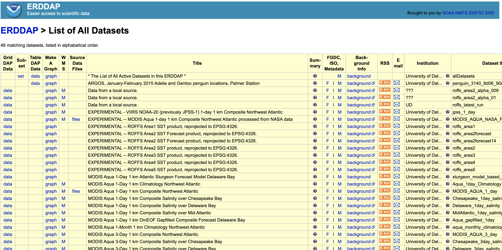
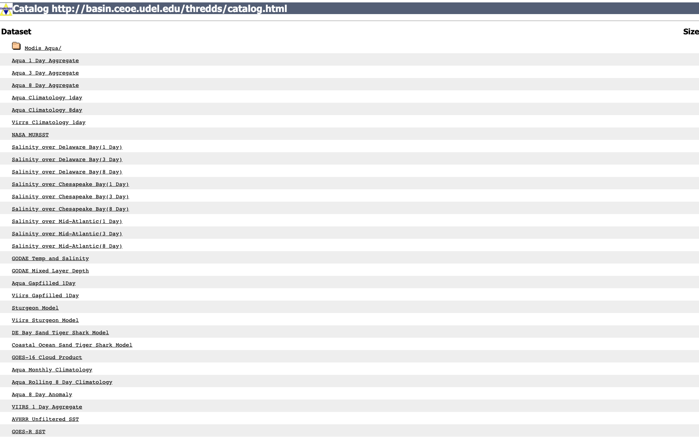
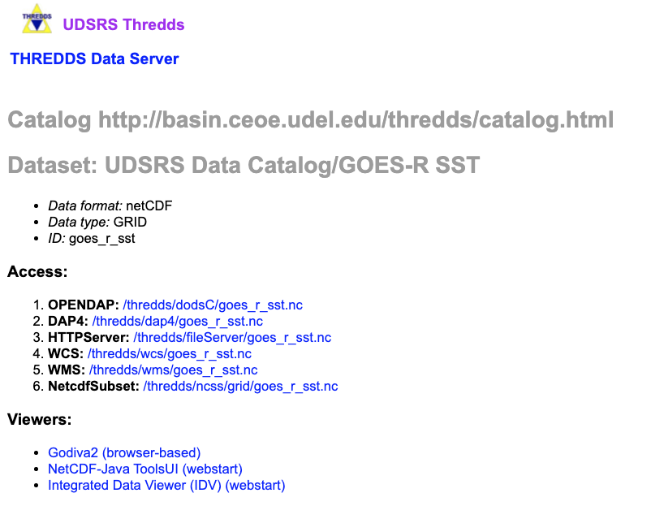
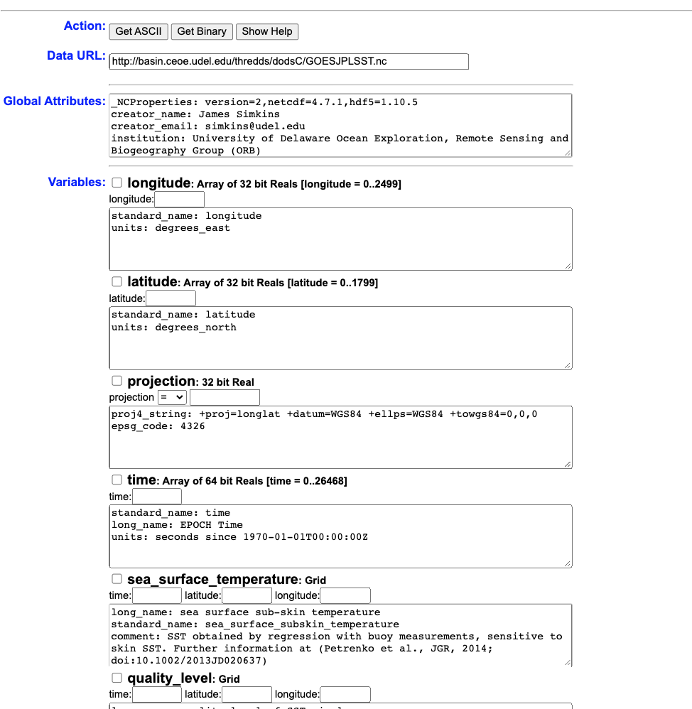
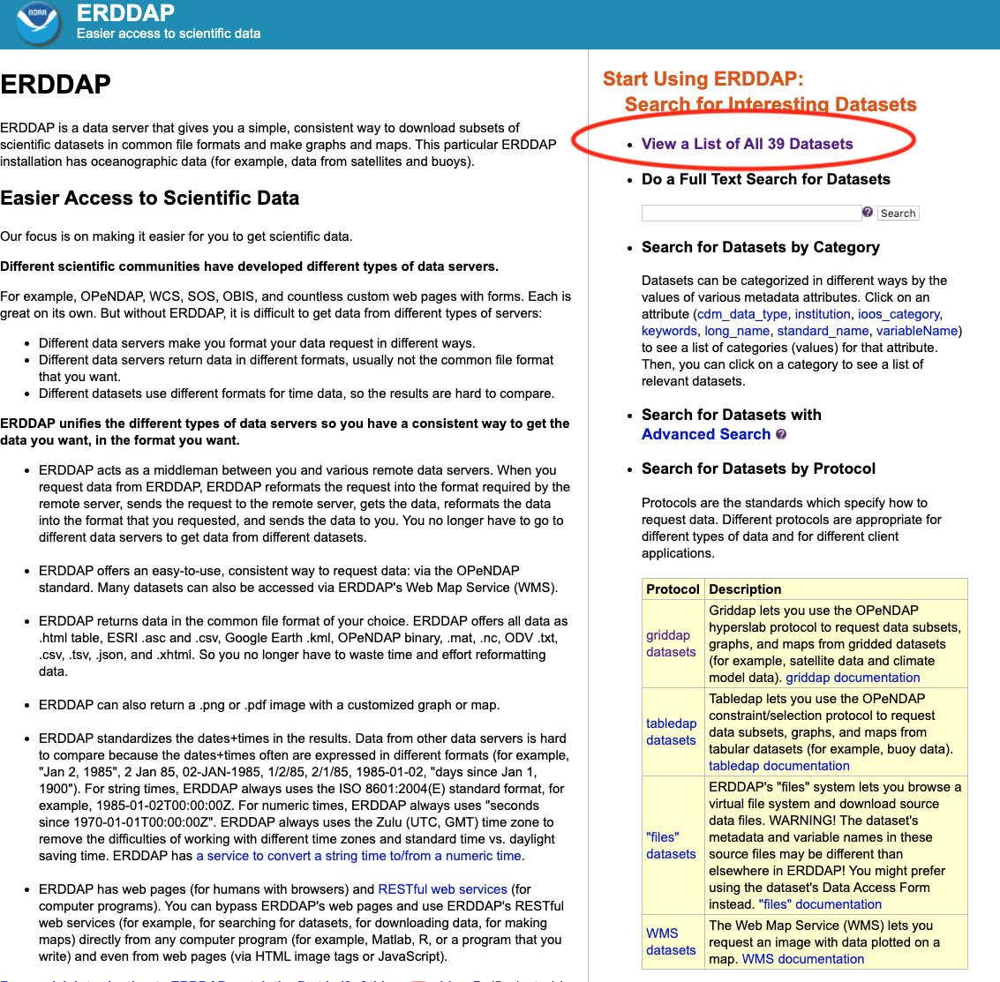
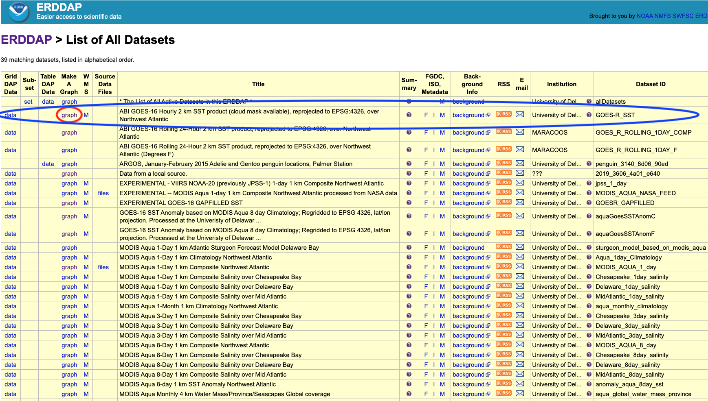
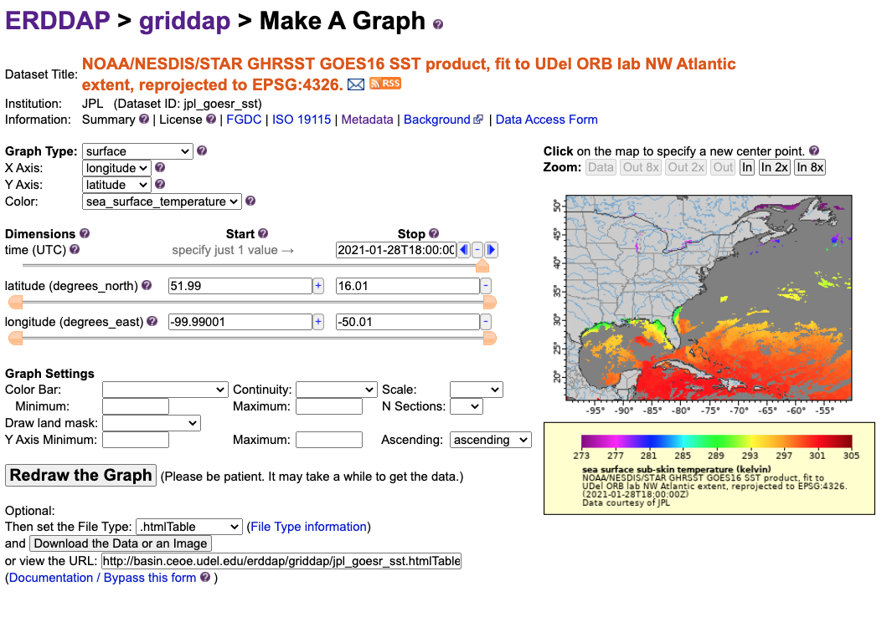

15 Remote Data Extraction

Up to this point, we’ve been using locally downloaded datasets derived from the course datasets folder. We downloaded these files in bulk or individually like so…
download.file("https://github.com/jsimkins2/geog473-673/tree/master/datasets/TreeData.csv", destfile = "/Users/james/Downloads/TreeData.csv" , mode='wb')
While Github is excellent for code, it’s not a cloud service for datasets. THREDDS and ERDDAP are the future of environmental data repositories.
15.1 THREDDS
THREDDS (Thematic Realtime Environmental Distributed Data Services) is an efficient way to extract specific areas or time periods of a dataset. For example, if you’re studying 2000-2020 water temperatures of the Delaware Bay, you don’t necessarily want a water temperature dataset covering the Atlantic Ocean from 1960-2020. It’s a waste of time to have to download, store, and process all of that data just to sub-select the Delaware Bay from 2000-2020. THREDDS makes it possible to download your desired subset from the get-go, saving you time and hard-drive space.
Here are some NASA/NOAA/UD THREDDS servers:
- https://thredds.jpl.nasa.gov/thredds/catalog.html - NASA Jet Propulsion Labratory
- https://thredds.daac.ornl.gov/thredds/catalog.html - Oak Ridge National Lab
- https://pae-paha.pacioos.hawaii.edu/thredds/catalog.html - Pacific Islands Ocean Observing System
- http://thredds.demac.udel.edu/thredds/catalog.html - UDEL DEMAC
- http://basin.ceoe.udel.edu/thredds/catalog.html - UDEL Satellite Receiving Station
- http://www.smast.umassd.edu:8080/thredds/catalog.html - UMASS Thredds
If you have a dataset or type of data you’re interested in, google search it with thredds or thredds server after it.
Today we’ll use UD’s Satellite Receiving Station THREDDS (#5 on the list). It’s located at this URL - http://basin.ceoe.udel.edu/thredds/catalog.html
Here’s what that looks like: 
If we click on GOES-R SST, we see we have some different avenues for data extraction.

OPeNDAP (Open-source Project for a Network Data Access Protocol) is a great way to subselect the data. Opendap offers html files of the data (BAD IDEA, THIS WILL CRASH YOUR BROWSER) or netCDF files of the data (great idea)

Now you can use this page to download subset datasets, or we can make this really easy and use R to accomplish that task. This is a high temporal resolution dataset, so let’s say we want Delaware Bay data from July 14 - July 16, 2019. All we need to make this happen is the url of the opendap page - http://basin.ceoe.udel.edu/thredds/dodsC/GOESJPLSST.nc.html - and the ncdf4 package.
## File http://basin.ceoe.udel.edu/thredds/dodsC/GOESJPLSST.nc (NC_FORMAT_CLASSIC):
##
## 8 variables (excluding dimension variables):
## float projection[]
## proj4_string: +proj=longlat +datum=WGS84 +ellps=WGS84 +towgs84=0,0,0
## epsg_code: 4326
## float sea_surface_temperature[longitude,latitude,time]
## long_name: sea surface sub-skin temperature
## standard_name: sea_surface_subskin_temperature
## comment: SST obtained by regression with buoy measurements, sensitive to skin SST. Further information at (Petrenko et al., JGR, 2014; doi:10.1002/2013JD020637)
## units: kelvin
## float quality_level[longitude,latitude,time]
## long_name: quality level of SST pixel
## flag_values: 1
## flag_values: 2
## flag_values: 3
## flag_values: 4
## flag_values: 5
## flag_meanings: no_data bad_data not_used not_used not_used best_quality
## float dt_analysis[longitude,latitude,time]
## long_name: deviation from SST reference
## comment: Deviation from reference SST, i.e., dt_analysis = SST - reference SST
## units: kelvin
## float satellite_zenith_angle[longitude,latitude,time]
## long_name: satellite zenith angle
## comment: satellite zenith angle
## units: degrees
## float sses_bias[longitude,latitude,time]
## long_name: SSES bias estimate
## comment: Bias is derived against Piecewise Regression SST produced by local regressions with buoys. Subtracting sses_bias from sea_surface_temperature produces more accurate estimate of SST at the depth of buoys. Further information at (Petrenko et al., JTECH, 2016; doi:10.1175/JTECH-D-15-0166.1)
## units: kelvin
## float sses_standard_deviation[longitude,latitude,time]
## long_name: SSES standard deviation
## units: kelvin
## comment: Standard deviation of sea_surface_temperature from SST measured by drifting buoys. Further information at (Petrenko et al., JTECH, 2016; doi:10.1175/JTECH-D-15-0166.1)
## float wind_speed[longitude,latitude,time]
## long_name: wind speed
## units: m s-1
## comment: Typically represents surface winds (10 meters above the sea surface)
##
## 3 dimensions:
## latitude Size:1800
## standard_name: latitude
## units: degrees_north
## longitude Size:2500
## standard_name: longitude
## units: degrees_east
## time Size:26420
## standard_name: time
## long_name: EPOCH Time
## units: seconds since 1970-01-01T00:00:00Z
##
## 9 global attributes:
## _NCProperties: version=2,netcdf=4.7.1,hdf5=1.10.5
## creator_name: James Simkins
## creator_email: simkins@udel.edu
## institution: University of Delaware Ocean Exploration, Remote Sensing and Biogeography Group (ORB)
## url: http://orb.ceoe.udel.edu/
## source: NOAA/NESDIS/STAR GHRSST- http://www.star.nesdis.noaa.gov - SST
## groundstation: University of Delaware, Newark, Center for Remote Sensing
## summary: NOAA/NESDIS/STAR GHRSST GOES16 SST product, fit to UDel ORB lab NW Atlantic extent, reprojected to EPSG:4326.
## acknowledgement: These data were provided by Group for High Resolution Sea Surface Temperature (GHRSST) and the National Oceanic and Atmospheric Administration (NOAA)Just with that one line of code, we’ve opened a connection with the GOES-R dataset on the THREDDS server. Printing the netcdf dataset provides some metadata info. Let’s use this metadata and extract the time period / spatial extent that we want.
## [1] "projection" "sea_surface_temperature"
## [3] "quality_level" "dt_analysis"
## [5] "satellite_zenith_angle" "sses_bias"
## [7] "sses_standard_deviation" "wind_speed"## [1] "seconds since 1970-01-01T00:00:00Z"Seconds since 1970-01-01 is referred to as EPOCH time. Basically, this datetime is considered the inception of the internet. Computers are very good at storing information in this format and this is why we use this. Let’s take out the last value -
## [1] 26420There you go, that’s an EPOCH time value. Let’s convert it to a human timestamp…
## [1] "2021-01-26 11:00:00 EST"as.POSIXct is a datetime package in R. It is a gold standard and you’ll see it as you gain more experience in playing with datetime conversions. You can also use anytime package.
## [1] "2021-01-26 11:00:00 EST"At this point, all we have to do is convert our human dates to EPOCH so we can extract the data. In order to do this all we need to do is convert a datetime object to a numeric. R handles it for us…
start_time = "2019-07-14" # year dash month dash day
epoch_start_time = as.numeric(as.POSIXct(start_time, format="%Y-%m-%d")) # %Y-%m-%d is telling the computer the format of our datestring is year dash month dash day
end_time = "2019-07-16" # year dash month dash day
epoch_end_time = as.numeric(as.POSIXct(end_time, format="%Y-%m-%d")) # %Y-%m-%d is telling the computer the format of our datestring is year dash month dash dayWe have the time values converted to the format of the dataset, but now we need to find the index - i.e. where that value lies in the dataset. We can find this using this code…
which.min(abs(array - value))
Which reads as -
which.min()- which value is the minimum of this arrayabs()- absolute value - we take the absolute value because negative numbers confuse the math
## [1] 13384That’s the index! This is just a big matching game essentially.
## [1] 1563076800## [1] 1563076800Alright, we have our start time index! What about the latitudes and longitudes? We’ll need to find the index of the lat/lon grid we want. Delaware bay is approximately between -77W, -73W, 36N, and 42N.
# print out a few longitude values - notice that the entire dataset is on this grid right here.
head(goes.nc$dim$lon$vals)## [1] -99.99001 -99.97000 -99.95000 -99.93000 -99.91000 -99.89000## [1] -98.01The 100th lon value is -98.20815. Aka, a lon index of 100 returns -98.20815.
So…which value is the minimum of the absolute value of the array of values minus the specific value? Let’s plug it in…
west_lon = -77
index_west_lon = which.min(abs(goes.nc$dim$longitude$vals - west_lon))
index_west_lon## [1] 1151## [1] -76.99001So our desired west_lon is -77, and the closest value within our longitude array is -76.99001. Not bad…let’s run the rest.
east_lon = -73
index_east_lon = which.min(abs(goes.nc$dim$longitude$vals - east_lon))
north_lat = 42
index_north_lat = which.min(abs(goes.nc$dim$latitude$vals - north_lat))
south_lat = 36
index_south_lat = which.min(abs(goes.nc$dim$latitude$vals - south_lat))Everything is indexed! Now we can use these indexes to extract the exact data that we want via ncvar_get from the ncdf4 package. We can enter in arguments named start and count. This tells ncvar_get at what space / time to start grabbing values. count tells ncvar_get how long to count in space / time. For example, if the resolution of our data is hourly and we start at 12:00:00 and the count is 4, that means we grab data at 12:00:00 , 13:00:00 , 14:00:00 , 15:00:00 , 16:00:00. The same goes for lat and lon - the count all depends on what resolution your data is in. If you have a spatial dataset at 5 degree resolution, each count will bring in another 5 degree lat/lon value.
At this point, we know our start values. At this point, we only have end values, not count values…Let’s figure those out
time_count = which.min(abs(goes.nc$dim$time$vals - epoch_end_time)) - which.min(abs(goes.nc$dim$time$vals - epoch_start_time))
time_count## [1] 48So, if we count 48 time values from the start_time of 2019-07-14, we’ll arrive at the end_time of 2019-07-16. Let’s do the same for our lat/lons.
# latitude counts
lat_count = abs(index_north_lat - index_south_lat)
lon_count = abs(index_west_lon - index_east_lon)Why do we take the absolute value? Because sometimes data is stored backwards. We don’t care which way it’s stored, we just need a positive number to count up from the starting value. Longitude values are weird because many times they are stored as negative values if they’re west of the meridian. Latitude values are also negative if we go south of the equator.
Now we have our count values, we can proceed. Remember, here is what the start argument is looking for…via (?ncvar_get)
A vector of indices indicating where to start reading the passed values (beginning at 1). The length of this vector must equal the number of dimensions the variable has. Order is X-Y-Z-T (i.e., the time dimension is last). If not specified, reading starts at the beginning of the file (1,1,1,...).
So x is longitude, y is latitude, and t is time. Whichever value is lower between index_west_lon and index_east_lon is our start value, and vice versa for latitudes.
## [1] 1151## [1] 1351## [1] 801## [1] 501Wait just a second…the southern index is greater than the northern index. Typically, values are stored from least to greatest. However, we’ve seen before that netCDF files can be stored upside-down before. So, instead of counting from our southern latitude to our northern latitude, we need to count from our northern latitude to our southern latitude. Here is what the count argument is looking for…
A vector of integers indicating the count of values to read along each dimension (order is X-Y-Z-T). The length of this vector must equal the number of dimensions the variable has. If not specified and the variable does NOT have an unlimited dimension, the entire variable is read. As a special case, the value "-1" indicates that all entries along that dimension should be read.
We tell ncvar_get() where to start it’s longitude, latitude, time and count until we have our lat/lon box and time slices selected. We already have our count values so now we plug them in and run - note this will take a few seconds to run and even longer if you have poor internet connection. This is data being extracted through the internet in real time.
# cool, let's grab sea_surface_temperature for Delaware Bay
sst.c <- ncvar_get(goes.nc, "sea_surface_temperature",start = c(index_west_lon,index_north_lat,index_start_time),
count = c(lon_count,lat_count,time_count))
dim(sst.c)## [1] 200 300 48And there is the data! It returns the raw data in the format we pulled it in - Lon, Lat, Time. We have a 2 dimensional array (lon x lat) with 48 time slices. Let’s convert one to raster and plot it really quickly.
library(maptools) # also loads sp package
library(ncdf4)
library(raster)
library(rasterVis)
arr.sst = sst.c[,,4]
arr.sst[arr.sst < 273] = NA
test.sst = raster(x = arr.sst)
test.sst## class : RasterLayer
## dimensions : 200, 300, 60000 (nrow, ncol, ncell)
## resolution : 0.003333333, 0.005 (x, y)
## extent : 0, 1, 0, 1 (xmin, xmax, ymin, ymax)
## crs : NA
## source : memory
## names : layer
## values : 294.54, 302.97 (min, max)What’s missing? Well we just gave it the raw data, we still need to plug in the extents! Also, we will need to plug in the CRS - luckily we know this data is in lat/lon because of how awesome this metadata is!
library(ggplot2)
# we need to transpose this dataset just like we did in week 4 of the R intro course
test.sst = t(test.sst)
# define the projection
sst.crs = ncatt_get(goes.nc, "projection")
extent(test.sst) = c(west_lon, east_lon, south_lat, north_lat)
crs(test.sst) = sst.crs$proj4_string## Warning in showSRID(uprojargs, format = "PROJ", multiline = "NO"): Discarded datum WGS_1984 in CRS definition,
## but +towgs84= values preserved# convert raster to dataframe for ggplot
df <- as.data.frame(test.sst, xy = TRUE)
# Throw together the usa spatial polygons data frame
ggplot() +
geom_raster(data = df , aes(x = x, y = y, fill = layer)) +
borders(fill="white", xlim = c(-77,-73), ylim=c(36,42),alpha = 0.5) +
coord_quickmap(xlim = c(-77,-73), ylim=c(36,42),expand = FALSE) 
Boom…There’s the data we wanted and we didn’t have to leave R to get it. We also saved a ton of time and hard drive space.
15.2 ERDDAP
THREDDS is very fast and great when you’re already familiar with a dataset. ERDDAP, on the other hand, is meant for humans. ERDDAP is a data server that gives you a simple, consistent way to download subsets of gridded and tabular scientific datasets in common file formats and make graphs and maps. ERDDAP can generate maps on the fly so you can check out the data before you proceed to download. Here are some NASA / NOAA / UDEL ERDDAP pages:
- https://upwell.pfeg.noaa.gov/erddap/index.html - NOAA Global Earth Observation Over 10,000 datasets available here
- https://coastwatch.pfeg.noaa.gov/erddap/index.html - NOAA Ocean ERDDAP - over 1400 datasets available here
- https://gliders.ioos.us/erddap/index.html - IOOS Ocean Glider Data - Over 600 datasets here
- http://www.neracoos.org/erddap/index.html - NERACOOS Ocean/Met - Over 200 Datasets
- http://basin.ceoe.udel.edu/erddap/index.html - UDEL Satellite Receiving Station ERDDAP
- Here’s a bigger list - https://github.com/rmendels/awesome-erddap
Let’s check out the UDEL Satellite Receiving Station ERDDAP page - here’s what it looks like

If we click on GOES-R SST, we see we have some different avenues for data extraction.

OPeNDAP (Open-source Project for a Network Data Access Protocol) is a great way to subselect the data. Opendap offers html files of the data (BAD IDEA, THIS WILL CRASH YOUR BROWSER) or netCDF files of the data (great idea)

You can use the Data Access Form at the top of the page to select data and download, or we can streamline this and use R to accomplish this easily. In order to do this, we just need the rerddap package.
install.packages("rerddap")
library("rerddap")
- the list of servers
rerddapknows about -server() - search an ERDDAP server for terms -
ed_search(query, page = NULL, page_size = NULL, which = "griddap", url = eurl(), ...) - get a list of datasets on an ERDDAP server -
ed_datasets(which = "tabledap", url = eurl()) - obtain information about a dataset -
info(datasetid, url = eurl(), ...) - extract data from a griddap dataset -
griddap(x, ..., fields = "all", stride = 1, fmt = "nc", url = eurl(), store = disk(), read = TRUE, callopts = list()) - extract data from a tabledap dataset -
tabledap(x, ..., fields = NULL, distinct = FALSE, orderby = NULL, orderbymax = NULL, orderbymin = NULL, orderbyminmax = NULL, units = NULL, url = eurl(), store = disk(), callopts = list())
Be careful when using the functions ed_search() and ed_datasets(). The default ERDDAP has over 9,000 datasets, most of which are grids, so that a list of all the gridded datasets can be quite long. A seemly reasonable search:
15.2.1 Finding the Data You Want
The first way to find a dataset is to browse the builtin web page for a particular ERDDAP server.
A list of some of the public available ERDDAP servers can be obtained from the rerddap command:
servers()
#> name
#> 1 Marine Domain Awareness (MDA) - Italy
#> 2 Marine Institute - Ireland
#> 3 CoastWatch Caribbean/Gulf of Mexico Node
#> 4 CoastWatch West Coast Node
#> 5 NOAA IOOS CeNCOOS (Central and Northern California Ocean Observing System)
#> 6 NOAA IOOS NERACOOS (Northeastern Regional Association of Coastal and Ocean Observing Systems)
#> 7 NOAA IOOS NGDAC (National Glider Data Assembly Center)
#> 8 NOAA IOOS PacIOOS (Pacific Islands Ocean Observing System) at the University of Hawaii (UH)
#> 9 NOAA IOOS SECOORA (Southeast Coastal Ocean Observing Regional Association)
#> 10 NOAA NCEI (National Centers for Environmental Information) / NCDDC
#> 11 NOAA OSMC (Observing System Monitoring Center)
#> 12 NOAA UAF (Unified Access Framework)
#> 13 ONC (Ocean Networks Canada)
#> 14 UC Davis BML (University of California at Davis, Bodega Marine Laboratory)
#> 15 R.Tech Engineering
#> 16 French Research Institute for the Exploitation of the Sea
#> url
#> 1 https://bluehub.jrc.ec.europa.eu/erddap/
#> 2 http://erddap.marine.ie/erddap/
#> 3 http://cwcgom.aoml.noaa.gov/erddap/
#> 4 https://coastwatch.pfeg.noaa.gov/erddap/
#> 5 http://erddap.axiomalaska.com/erddap/
#> 6 http://www.neracoos.org/erddap/
#> 7 http://data.ioos.us/gliders/erddap/
#> 8 http://oos.soest.hawaii.edu/erddap/
#> 9 http://129.252.139.124/erddap/
#> 10 http://ecowatch.ncddc.noaa.gov/erddap/
#> 11 http://osmc.noaa.gov/erddap/
#> 12 https://upwell.pfeg.noaa.gov/erddap/
#> 13 http://dap.onc.uvic.ca/erddap/
#> 14 http://bmlsc.ucdavis.edu:8080/erddap/
#> 15 http://meteo.rtech.fr/erddap/
#> 16 http://www.ifremer.fr/erddap/index.htmlThe second way to find and obtain the desired data is to use functions in rerddap. The basic steps are:
- Find the dataset on an ERDDAP server (
rerddap::servers(),rerddap::ed_search(),rerddap::ed_datasets()). - Get the needed information about the dataset (
rerddap::info()) - Think about what you are going to do.
- Make the request for the data (
rerddap::griddap()orrerddap::tabledap()).
rerddap::tabledap() - Point datasets, like buoy data or weather station.
Here is an example of this…
## Registered S3 method overwritten by 'hoardr':
## method from
## print.cache_info httrNOAA’s National Data Buoy Center (NDBC) collects world-wide data from buoys in the ocean. Let’s browse that dataset by entering this into the R console
rerddap::browse('cwwcNDBCMet')
That’s the ERDDAP site that we’re going to pull data from…
## <ERDDAP info> cwwcNDBCMet
## Base URL: https://upwell.pfeg.noaa.gov/erddap/
## Dataset Type: tabledap
## Variables:
## apd:
## Range: 0.0, 95.0
## Units: s
## atmp:
## Range: -153.4, 50.0
## Units: degree_C
## bar:
## Range: 800.7, 1198.8
## Units: hPa
## dewp:
## Range: -99.9, 48.7
## Units: degree_C
## dpd:
## Range: 0.0, 64.0
## Units: s
## gst:
## Range: 0.0, 75.5
## Units: m s-1
## latitude:
## Range: -55.0, 71.758
## Units: degrees_north
## longitude:
## Range: -177.75, 179.001
## Units: degrees_east
## mwd:
## Range: 0, 359
## Units: degrees_true
## ptdy:
## Range: -14.2, 14.0
## Units: hPa
## station:
## tide:
## Range: -9.37, 6.13
## Units: m
## time:
## Range: 4910400.0, 1.6116732E9
## Units: seconds since 1970-01-01T00:00:00Z
## vis:
## Range: 0.0, 66.7
## Units: km
## wd:
## Range: 0, 359
## Units: degrees_true
## wspd:
## Range: 0.0, 96.0
## Units: m s-1
## wspu:
## Range: -98.7, 97.5
## Units: m s-1
## wspv:
## Range: -98.7, 97.5
## Units: m s-1
## wtmp:
## Range: -98.7, 50.0
## Units: degree_C
## wvht:
## Range: 0.0, 92.39
## Units: mBuoysInfo <- info('cwwcNDBCMet')
locationBuoys <- tabledap(BuoysInfo, distinct = TRUE, fields = c("station", "longitude", "latitude"), "longitude>=-76", "longitude<=-74", "latitude>=38", "latitude<=40")## info() output passed to x; setting base url to: https://upwell.pfeg.noaa.gov/erddap/locationBuoys = locationBuoys[1:4,]
locationBuoys$latitude <- as.numeric(locationBuoys$latitude)
locationBuoys$longitude <- as.numeric(locationBuoys$longitude)
xlim <- c(-76, -74)
ylim <- c(38, 40)
coast <- map_data("worldHires", ylim = ylim, xlim = xlim)
ggplot() +
geom_point(data = locationBuoys, aes(x = longitude , y = latitude, colour = factor(station) )) +
geom_polygon(data = coast, aes(x = long, y = lat, group = group), fill = "grey80") +
theme_bw() + ylab("latitude") + xlab("longitude") +
coord_fixed(1.3, xlim = xlim, ylim = ylim) +
ggtitle("Delaware Bay Buoys")
rerddap::griddap() - Gridded datasets, like sea surface temperature from GOES-R.
returns about 1000 responses. The more focused query:
still returns 172 responses. If the simple search doesn’t narrow things enough, look at the advanced search function ed_search_adv().
Let’s use this dataset - https://coastwatch.pfeg.noaa.gov/erddap/griddap/jplMURSST41.html
## <ERDDAP info> jplMURSST41
## Base URL: https://upwell.pfeg.noaa.gov/erddap/
## Dataset Type: griddap
## Dimensions (range):
## time: (2002-06-01T09:00:00Z, 2021-01-25T09:00:00Z)
## latitude: (-89.99, 89.99)
## longitude: (-179.99, 180.0)
## Variables:
## analysed_sst:
## Units: degree_C
## analysis_error:
## Units: degree_C
## mask:
## sea_ice_fraction:
## Units: 1Alright, let’s extract some of this data and plot it. For this, we can use ‘last’ for the latest time instead of plugging in a time string.
require("ggplot2")
require("mapdata")
require("rerddap")
# grab the latest MUR SST info
sstInfo <- info('jplMURSST41')
# get latest daily sst
murSST <- griddap(sstInfo, latitude = c(30, 45), longitude = c(-80., -70), time = c('last','last'), fields = 'analysed_sst')## info() output passed to x; setting base url to: https://upwell.pfeg.noaa.gov/erddap/mycolor <- colors$temperature
w <- map_data("worldHires", ylim = c(30, 45), xlim = c(-80., -70))
ggplot(data = murSST$data, aes(x = lon, y = lat, fill = analysed_sst)) +
geom_polygon(data = w, aes(x = long, y = lat, group = group), fill = "grey80") +
geom_raster(interpolate = FALSE) +
scale_fill_gradientn(colours = mycolor, na.value = NA) +
theme_bw() + ylab("latitude") + xlab("longitude") +
coord_fixed(1.3, xlim = c(-80, -70), ylim = c(30, 45)) + ggtitle("Latest MUR SST")
What if we want to use a custom URL that’s not pre-loaded into rerddap ? Let’s use Ireland’s Marine Institute ERDDAP. Follow these steps:
- Go to http://erddap.marine.ie/erddap/ and select datasets
- Look to the far right column named Dataset ID
- Locate this ID -
IMI_NEATL - Select Graph under ‘Make a Graph’ Column for that Dataset ID
- Look at the variables - see
sea_surface_temperature
urlBase <- "http://erddap.marine.ie/erddap/"
parameter <- "sea_surface_temperature"
sstTimes <- c("last", "last")
sstLats <- c(48.00625, 57.50625)
sstLons <- c(-17.99375, -1.00625)
xlim <- c(-17.99375, -1.00625)
ylim <- c(48.00625, 57.50625)
dataInfo <- rerddap::info("IMI_NEATL", url = urlBase)
NAtlsst <- griddap(dataInfo, longitude = sstLons, latitude = sstLats, time = sstTimes, fields = parameter, url = urlBase)## info() output passed to x; setting base url to: http://erddap.marine.ie/erddap/## 'data.frame': 1034960 obs. of 4 variables:
## $ time : chr "2021-01-25T00:00:00Z" "2021-01-25T00:00:00Z" "2021-01-25T00:00:00Z" "2021-01-25T00:00:00Z" ...
## $ lat : num 48 48 48 48 48 ...
## $ lon : num -18 -18 -18 -18 -17.9 ...
## $ sea_surface_temperature: num 11.9 11.9 11.9 11.9 12.5 ...my.col <- colors$temperature
w <- map_data("worldHires", ylim = ylim, xlim = xlim)
myplot <- ggplot() +
geom_raster(data = NAtlsst$data, aes(x = lon, y = lat, fill = sea_surface_temperature), interpolate = FALSE) +
geom_polygon(data = w, aes(x = long, y = lat, group = group), fill = "grey80") +
theme_bw() + scale_fill_gradientn(colours = my.col, na.value = NA, limits = c(5,15), name = "Temperature") +
ylab("latitude") + xlab("longitude") +
coord_fixed(1.3, xlim = xlim, ylim = ylim, expand=FALSE) +
ggtitle(paste("Sea Surface Temperature : ", NAtlsst$data$time[1]))
myplot
15.3 Assignment
Deliverables: - R Code/Script - Images/Plots
Select any dataset from the THREDDS server and create a script that loads in the data and plots it. In your script explain why you chose that dataset, detail each step and describe why it’s happening, Turn in your R script and the Image/Plot you’ve made.
Select any dataset from the ERDDAP server and create a script that loads in the data and plots it. In your script explain why you chose that dataset, detail each step and describe why it’s happening, Turn in your R script and the Image/Plot you’ve made.
15.3.1 Extra Credit - 2 Points
Find a dataset that uses TableDap’s instance of ERDDAP. This is a method for storing point data instead of spatial data. Create a routine that downloads and extracts data using the tabledap() function from rerddap